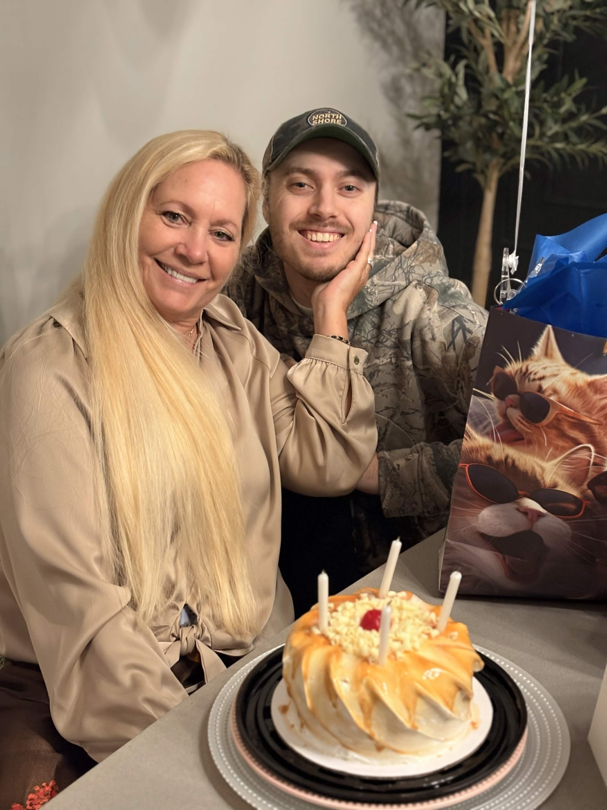

Me:

About the Author
Hello, my name is Caleb Knapp, a current student at Kennesaw State University pursuing a degree in Information Technology with a focus in Cybersecurity. I am currently in my senior year and am currently exploring opportunities in the field. I am set to graduate in December of 2027 with a Bachelors of Science in Information Technology. Formerly, I have graduated from a different college called The D.A.V.E School, which stands for Digital Animation and Visual Effects. I graduated from this school in 2020 with a dual Associates Degree in Game Design and Visual Effects.
My passions and hobbies include: video games, so much so that I pursued a degree in making them, 3D modeling, 3D animation, and 3D visual effects. I also enjoy drawing and painting, both digitally and traditionally. I have a passion for learning new things and exploring new ideas, which is why I am pursuing a degree in Information Technology with a focus in Cybersecurity. I am always looking for new challenges and opportunities to grow as a person and as a professional.
Thank you for visiting my web page, and I hope you find the information presented here both informative and useful!
Resume
Click here to view my resume.
Contact Information/Links
Email: calebknapp0930@gmail.com
Student Email: cknapp11@students.kennesaw.edu
LinkedIn: Caleb Knapp
Artstation: Caleb Knapp